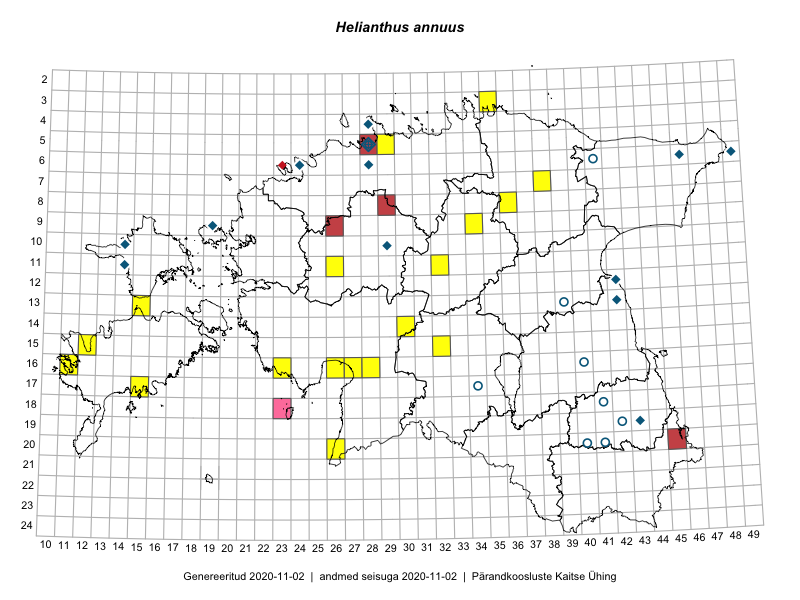

Helianthus annuus
Uuendatud: 2016-12-02
Kaardile koondatud taksonid: Helianthus annuus L.

Kaart põhineb 14 vaatlusel. Taksonit on leitud 8 ruudust.
Viited andmebaasikirjetele
- Jana-Maria Habicht, Ester Valdvee, Kirke Pilvik: 2015-07-25: 09-34: ala
- Jana-Maria Habicht, Ester Valdvee, Kirke Pilvik: 2015-07-26: 09-34: GPS punkt
- Ott Luuk, Eerik Leibak: 2016-07-25: 09-34: ala
- Ott Luuk, Eerik Leibak: 2016-07-25: 09-34: GPS punkt
- Liina Oja, Eerik Leibak: 2016-07-28: 07-38: ala
- Maret Gerz, Aat Sarv: 2016-07-04: 16-26: GPS punkt
- Peedu Saar, Maret Gerz: 2016-08-11: 13-15: GPS punkt
- Aat Sarv, Maret Gerz: 2016-07-04: 16-26: ala
- Liina Oja, Eerik Leibak: 2016-07-28: 07-38: GPS punkt
- Indrek Tammekänd: 2016-07-31: 16-26: GPS punkt
- Indrek Tammekänd: 2016-08-14: 16-27: GPS punkt
- Indrek Tammekänd, Liis Jääger: 2016-08-10: 16-28: GPS punkt
- Sirje Azarov, Indrek Tammekänd: 2016-07-18: 20-26: ala
- Hannes Pehlak, Tõnu Ploompuu, Marko Veinbergs: 2016-07-21: 14-30: ala